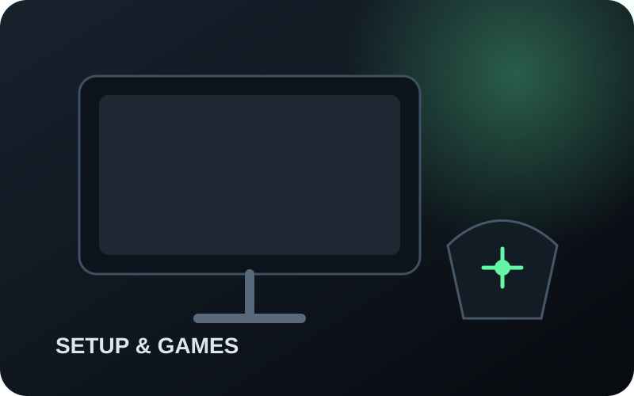

FPS competitivo
Fluidez e controle
Priorize frame rate alto e estável, resposta real do monitor, mouse adequado à mão/pegada e rede consistente.
Um setup bom funciona como um sistema: jogo, PC ou console, tela, periféricos, rede e ergonomia precisam fazer sentido juntos. O produto entra no fim da decisão, não no começo.
Perfil de uso → gargalo atual → meta de desempenho → compatibilidade → prioridade de upgrade → produto.
Transparência: alguns botões levam à Amazon por link de afiliado. Como participante do Programa de Associados da Amazon, sou remunerado pelas compras qualificadas efetuadas.

Visual editorial Córtex para contexto da categoria.A mesma compra pode ser ótima para um perfil e ruim para outro. Use o contexto antes da ficha técnica.
Priorize frame rate alto e estável, resposta real do monitor, mouse adequado à mão/pegada e rede consistente.
Resolução, contraste, conforto e áudio podem valer mais do que perseguir cada milissegundo.
Quantidade e posição de botões, macros e conforto podem pesar mais que diferenças mínimas entre periféricos já rápidos.
Valide jogo, sinal aceito, VRR, resposta a 120 Hz e caminho HDMI. O número na caixa não resolve tudo.
Clareza de texto, ergonomia, conectividade e conforto por horas entram junto do desempenho em jogo.
Mais Hz só ajuda quando a fonte realmente entrega frames e o monitor consegue exibi-los com boa resposta.
Faz sentido quando jogos competitivos dominam e o sistema consegue entregar FPS alto de forma consistente.
Equilibra detalhe e fluidez, mas aumenta a carga da GPU. Não existe uma única “GPU 1440p/180 Hz” para todos os jogos.
Separe sempre nativo, upscaling e frame generation; média de FPS e estabilidade não são a mesma coisa.
Verifique modo de 120 fps, resolução aceita, VRR, input lag/resposta a 120 Hz e a porta HDMI correta.
| Problema atual | Primeiro passo | Por quê |
|---|---|---|
| PC não sustenta o FPS-alvo | Diagnosticar CPU/GPU/configuração antes de comprar mais Hz | Mais teto do monitor não cria frames renderizados. |
| PC entrega muito acima de 60/75 Hz | Considerar tela high-Hz se o uso competitivo justificar | A tela pode ter virado o gargalo visível. |
| Rede oscila apesar de muitos Mbps | Medir perda, latência, jitter e latência sob carga | Throughput não descreve estabilidade em tempo real. |
| Mouse rápido, mas desconfortável | Corrigir formato/peso/pegada | Fit pode dominar diferenças eletrônicas marginais. |
Use esta sequência: formato + mão/pegada → peso → botões → cabo ou wireless → desempenho já adequado → bateria/software/extras.

Faz sentido para: quem quer eliminar o cabo, aceita pilha AA e não exige um mouse ultraleve ou recarregável por USB.
Trade-offs: maior massa que ultraleves modernos; usa pilha AA; formato compacto precisa combinar com mão e pegada.
Ver G305 na Amazon →Publicidade · link de afiliadoFaz sentido para: quem quer uma opção com fio simples, aceita o cabo e não precisa de wireless ou muitos botões dedicados.
Trade-offs: o cabo permanece na mesa; o formato é compacto; não substitui classes com muitos botões para MMO/MOBA.
Referência editorial de decisão. Sem imagem de SKU e sem CTA comercial enquanto a proveniência autorizada da imagem exata não estiver validada.Depois de latência adequada, compare layout, switch/actuation, rollover, conforto, conexão e software.
Compare plataforma, conforto, reprodução sonora, microfone e estabilidade/latência da conexão.
Olhe perda de pacotes, latência, jitter e latência sob carga antes de concluir que precisa de mais Mbps.
Mantenha tela, teclado e mouse em posições confortáveis; preserve espaço para movimento e punhos neutros.